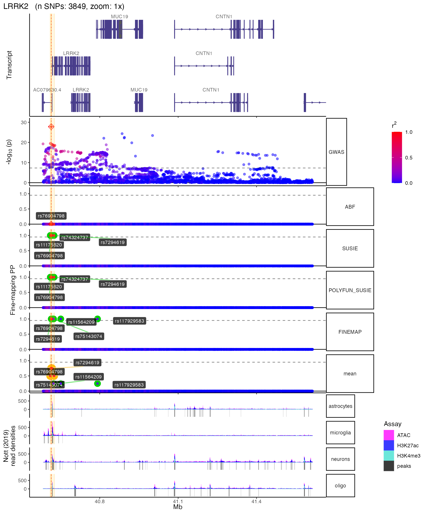
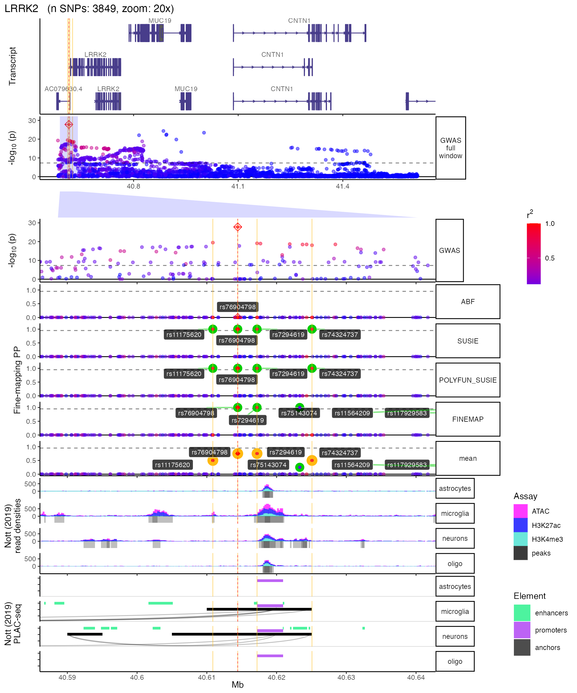
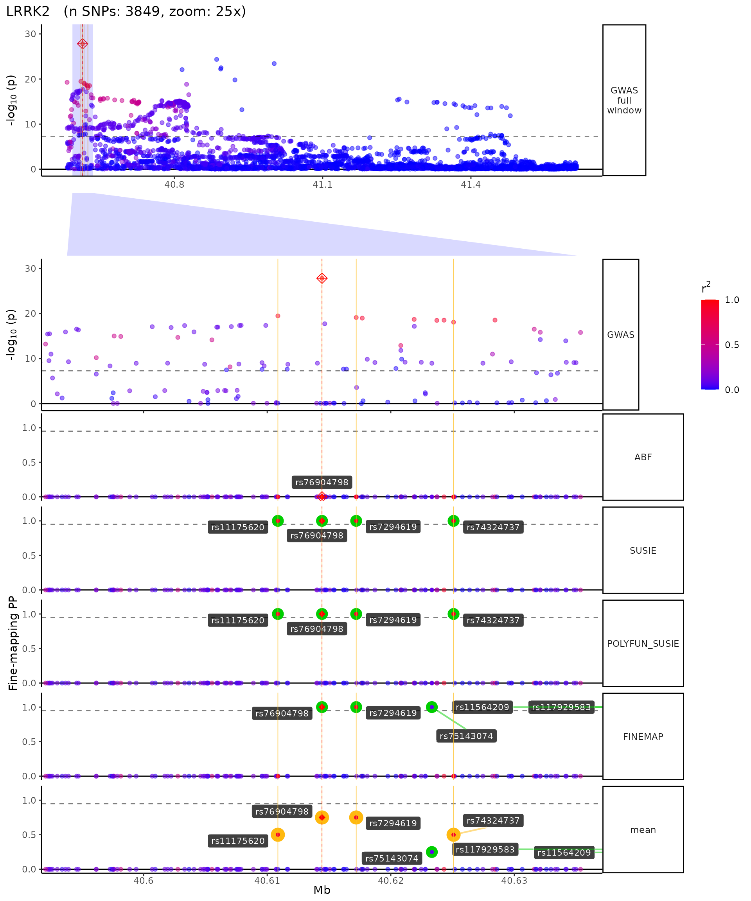
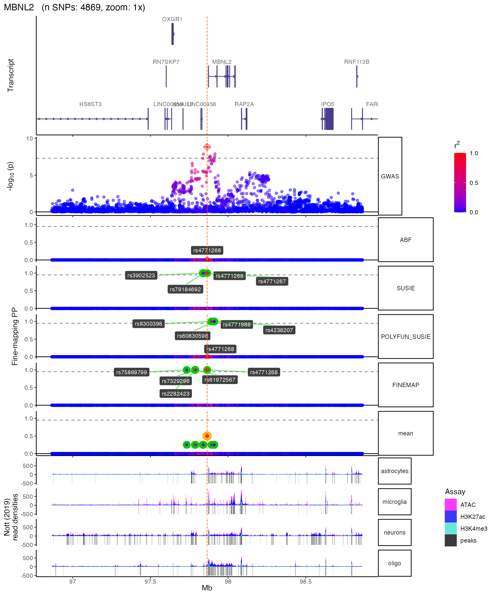
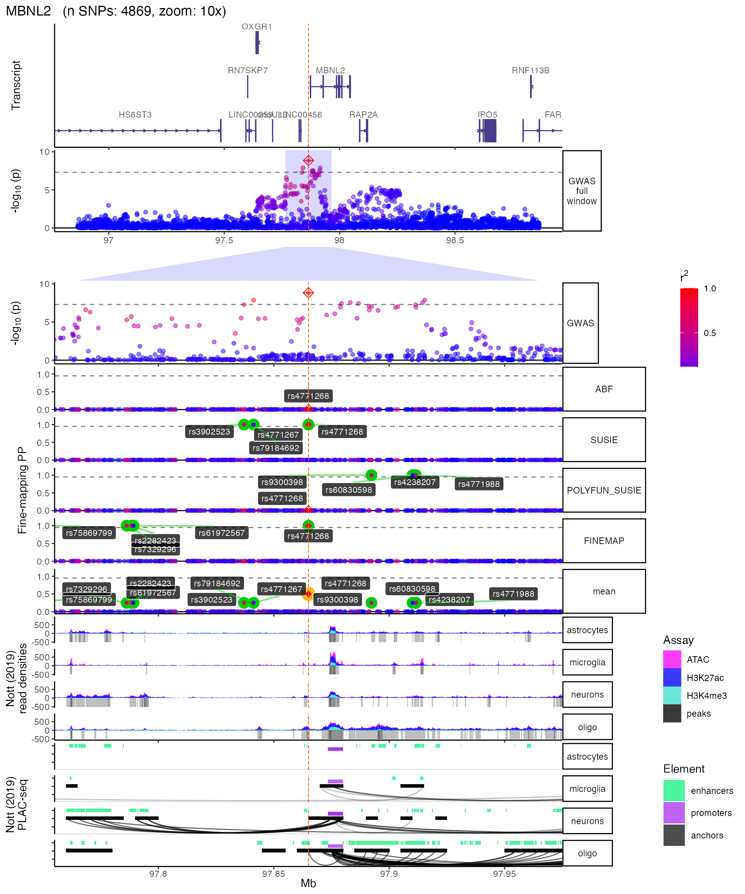
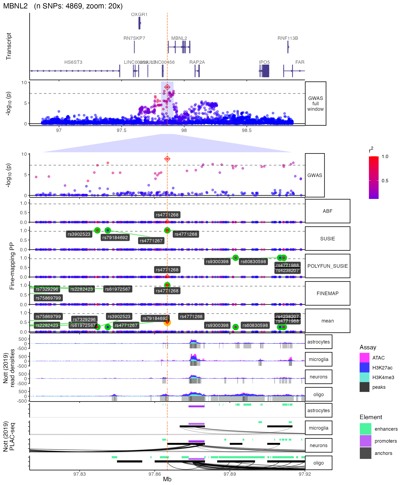
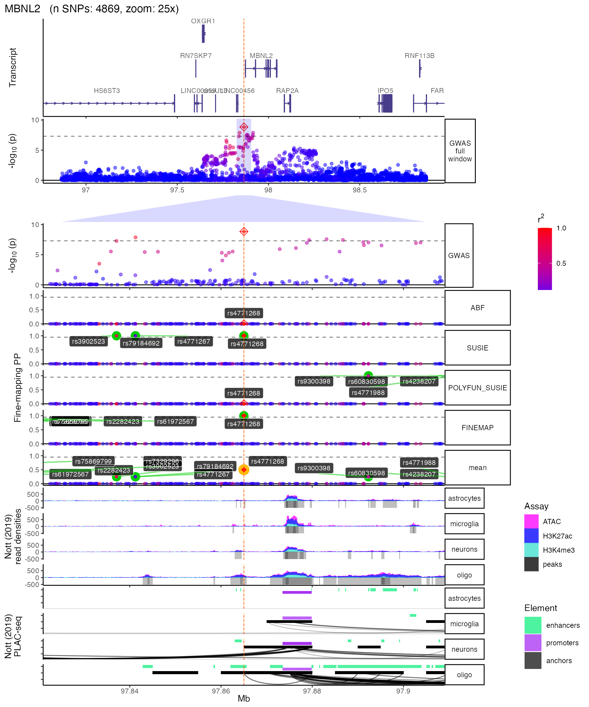
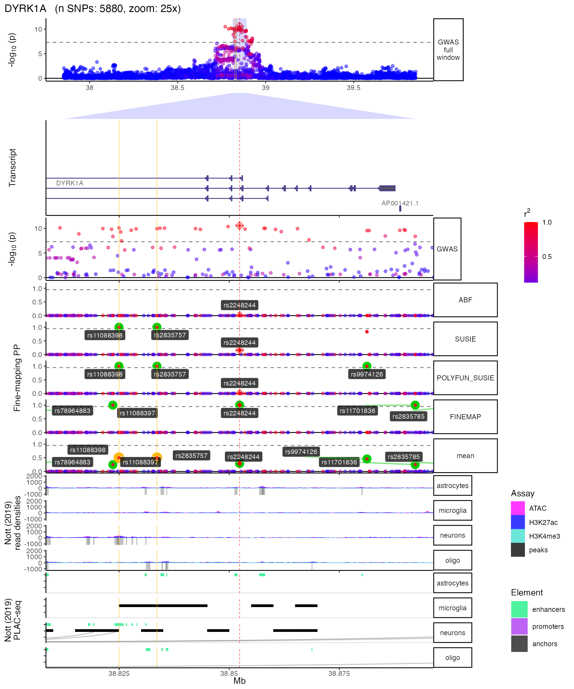
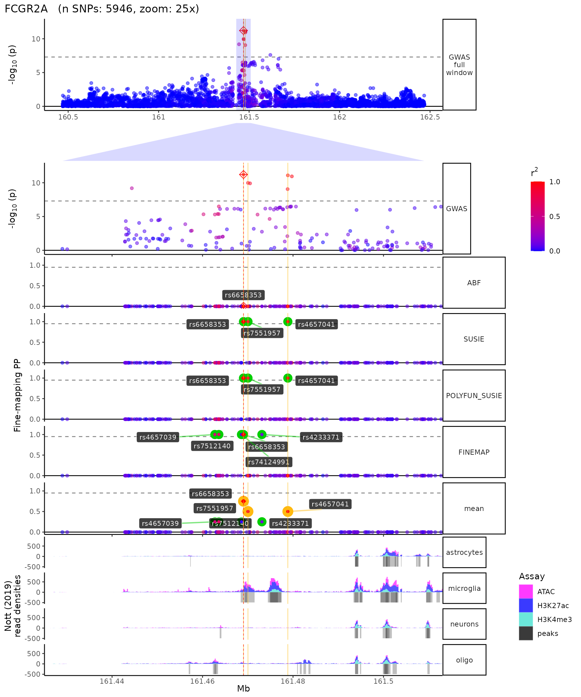

vignettes/PD_loci_vignette.Rmd
PD_loci_vignette.Rmd
root.dir <- "~/Desktop"
knitr::opts_chunk$set(
collapse = TRUE,
comment = "#>",
root.dir = root.dir,
fig.height = 12,
fig.width = 10
)
knitr::opts_knit$set(
root.dir = root.dir
)
# knitr::opts_chunk$get("root.dir")
# devtools::build_vignettes(quiet = F)
library(echolocatoR)
#> Registered S3 method overwritten by 'GGally':
#> method from
#> +.gg ggplot2
library(data.table)
results_dir <- "~/Desktop/results"Here we take advantage of the fine-mapping results files already available on the echolocatoR Fine-mapping Portal.
echolocatoR includes some functions to search for and extract files from GitHub repos. In this case we’ll get files from the echolocatoR Fine-mapping Portal, but these functions can be used on any public GitHub repo.
GITHUB.list_files(): Searches the repo for files matching your regex query.GITHUB.download_files(): Not only does this download your files, but it reconstructs the original folder structure they were found in. This is useful for echolocatoR output files, which are automatically organized in a hierarchical folder structure (e.g. results/GWAS/Nalls23andMe_2019).
locus_list <- c("LRRK2","MBNL2","DYRK1A","FCGR2A","MED12L") First, we’ll download the multi-finemap results files.
remote_finemap <- GITHUB.list_files(creator="RajLabMSSM",
repo="Fine_Mapping_Shiny",
query="*Nalls23andMe_2019.*UKB.multi_finemap.csv.gz")
#> [1] "6528 files found in GitHub repo: RajLabMSSM/Fine_Mapping_Shiny"
#> [1] "83 files found matching query."
# Let's just download the loci of interest.
remote_finemap <- grep(paste(locus_list,collapse="|"), remote_finemap, value = T)
local_finemap <- GITHUB.download_files(filelist = remote_finemap,
download_dir = results_dir,
overwrite = F) Next, we’ll download the files containing LD with the lead GWAS SNP.
remote_ld <- GITHUB.list_files(creator="RajLabMSSM",
repo="Fine_Mapping_Shiny",
query="*Nalls23andMe_2019.*UKB.LD.csv.gz")
#> [1] "6528 files found in GitHub repo: RajLabMSSM/Fine_Mapping_Shiny"
#> [1] "76 files found matching query."
# Let's just download the loci of interest.
remote_ld <- grep(paste(locus_list,collapse="|"), remote_ld, value = T)
local_ld <- GITHUB.download_files(filelist = remote_ld,
download_dir = results_dir,
overwrite = F) Now let’s put them in a data dictionary for easy retrieval later. This way, you can simply find the right file path my locus name.
This function also infers a number of other useful variables from this data.
named_list <- list("finemap"=local_finemap,
"LD"=local_ld)
data_dict <- GITHUB.make_data_dict(named_list)
locus <- "LRRK2"
track_order <- names(PLOT.heights_dict())
track_order <- R.utils::insert(track_order[track_order!="Genes"], 1, "Genes")
LRRK2 <- PLOT.locus(finemap_dat=fread(data_dict$finemap[[locus]]),
LD_matrix=fread(data_dict$LD[[locus]]),
LD_reference="UKB",
locus_dir=data_dict$locus_dir[[locus]],
max_transcripts = 3,
Nott_binwidth = 200,
Nott_epigenome=T,
Nott_regulatory_rects = T,
Nott_show_placseq = T,
save_plot=T,
return_list=T,
zoom_exceptions_str = "*full window$|zoom_polygon|Genes",
track_order = track_order,
plot.zoom=c("1x","20x","25x"))
#> +-------- Locus Plot: LRRK2--------+
#> [1] "+ Filling NAs in CS cols with 0"
#> [1] "+ Filling NAs in PP cols with 0"
#> [1] "++ PLOT:: GWAS full window track"
#> [1] "++ PLOT:: GWAS track"
#> [1] "++ PLOT:: Merged fine-mapping track"
#> [1] "Melting PP and CS from 5 fine-mapping methods"
#> Warning: The `.dots` argument of `group_by()` is deprecated as of dplyr 1.0.0.
#> [1] "++ PLOT:: Adding Gene model track."
#> Loading required package: ensembldb
#> Loading required package: BiocGenerics
#> Loading required package: parallel
#>
#> Attaching package: 'BiocGenerics'
#> The following objects are masked from 'package:parallel':
#>
#> clusterApply, clusterApplyLB, clusterCall, clusterEvalQ,
#> clusterExport, clusterMap, parApply, parCapply, parLapply,
#> parLapplyLB, parRapply, parSapply, parSapplyLB
#> The following objects are masked from 'package:stats':
#>
#> IQR, mad, sd, var, xtabs
#> The following objects are masked from 'package:base':
#>
#> anyDuplicated, append, as.data.frame, basename, cbind, colnames,
#> dirname, do.call, duplicated, eval, evalq, Filter, Find, get, grep,
#> grepl, intersect, is.unsorted, lapply, Map, mapply, match, mget,
#> order, paste, pmax, pmax.int, pmin, pmin.int, Position, rank,
#> rbind, Reduce, rownames, sapply, setdiff, sort, table, tapply,
#> union, unique, unsplit, which.max, which.min
#> Loading required package: GenomicRanges
#> Loading required package: stats4
#> Loading required package: S4Vectors
#>
#> Attaching package: 'S4Vectors'
#> The following objects are masked from 'package:data.table':
#>
#> first, second
#> The following object is masked from 'package:base':
#>
#> expand.grid
#> Loading required package: IRanges
#>
#> Attaching package: 'IRanges'
#> The following object is masked from 'package:data.table':
#>
#> shift
#> Loading required package: GenomeInfoDb
#> Loading required package: GenomicFeatures
#> Loading required package: AnnotationDbi
#> Loading required package: Biobase
#> Welcome to Bioconductor
#>
#> Vignettes contain introductory material; view with
#> 'browseVignettes()'. To cite Bioconductor, see
#> 'citation("Biobase")', and for packages 'citation("pkgname")'.
#> Loading required package: AnnotationFilter
#>
#> Attaching package: 'ensembldb'
#> The following object is masked from 'package:stats':
#>
#> filter
#> max_transcripts=3.
#> 9 transcripts from 5 genes returned.
#> Fetching data...OK
#> Parsing exons...OK
#> Defining introns...OK
#> Defining UTRs...OK
#> Defining CDS...OK
#> aggregating...
#> Done
#> Constructing graphics...
#> [1] "NOTT_2019:: Creating epigenomic histograms plot"
#> [1] "NOTT_2019:: Importing bigWig subsets from UCSC..."
#> [1] "+ Inferring genomic limits for window: 1x"
#> [1] "++ NOTT_2019:: Downloading and merging 12 peaks BED files."
#> [1] "++ NOTT_2019:: Converting merged BED files to GRanges."
#> [1] "++ NOTT_2019:: 634540 ranges retrieved."
#> 441294 query SNP(s) detected with reference overlap.
#> [1] "+ PLOT:: Calculating max histogram height"
#> [1] "++ Converting label units to Mb..."
#> [1] "NOTT_2019:: Creating PLAC-seq interactome plot"
#> [1] "+ NOTT_2019:: Getting interactome data."
#> [1] "++ Converting to GRanges."
#> [1] "Importing Microglia interactome ..."
#> [1] "Importing Neuronal interactome ..."
#> [1] "Importing Oligo interactome ..."
#> Warning in .replace_seqlevels_style(x_seqlevels, value): found more than one
#> best sequence renaming map compatible with seqname style "NCBI" for this object,
#> using the first one
#> 610 query SNP(s) detected with reference overlap.
#> Warning in .replace_seqlevels_style(x_seqlevels, value): found more than one
#> best sequence renaming map compatible with seqname style "NCBI" for this object,
#> using the first one
#> 1466 query SNP(s) detected with reference overlap.
#> [1] "++ NOTT_2019:: Adding enhancer/promoter rectangles"
#> [1] "++ Converting genomic units to Mb..."
#> [1] "++ NOTT_2019:: Returning PLAC-seq track."
#> [1] "+ Adding vertical lines to highlight SNP groups..."
#> +>+>+>+>+ plot.zoom = 1x +<+<+<+<+
#> [1] "+ PLOT:: Get window suffix..."
#> [1] "+ PLOT:: Removing GWAS full window track @ zoom=1x"
#> [1] "+ Removing subplot margins..."
#> [1] "+ Reordering tracks..."
#> [1] "+ Ensuring last track shows genomic units..."
#> [1] "+ Aligning xlimits for each subplot..."
#> [1] "+ Checking track heights..."
#> [1] "+ PLOT:: Saving plot ==> /Users/schilder/Desktop/results/GWAS/Nalls23andMe_2019/LRRK2/multiview.LRRK2.UKB.1x.jpg"
#> Warning: ggrepel: 2 unlabeled data points (too many overlaps). Consider
#> increasing max.overlaps
#> Warning: ggrepel: 2 unlabeled data points (too many overlaps). Consider
#> increasing max.overlaps
#> Warning: ggrepel: 2 unlabeled data points (too many overlaps). Consider
#> increasing max.overlaps
#> Warning: ggrepel: 2 unlabeled data points (too many overlaps). Consider
#> increasing max.overlaps
#> +>+>+>+>+ plot.zoom = 20x +<+<+<+<+
#> [1] "+ PLOT:: Get window suffix..."
#> [1] "+ Constructing zoom polygon..."
#> [1] "+ Highlighting zoom origin..."
#> [1] "+ Removing subplot margins..."
#> [1] "+ Reordering tracks..."
#> [1] "+ Ensuring last track shows genomic units..."
#> [1] "+ Aligning xlimits for each subplot..."
#> [1] "+ Checking track heights..."
#> [1] "+ PLOT:: Saving plot ==> /Users/schilder/Desktop/results/GWAS/Nalls23andMe_2019/LRRK2/multiview.LRRK2.UKB.20x.jpg"
#> +>+>+>+>+ plot.zoom = 25x +<+<+<+<+
#> [1] "+ PLOT:: Get window suffix..."
#> [1] "+ Constructing zoom polygon..."
#> [1] "+ Highlighting zoom origin..."
#> [1] "+ Removing subplot margins..."
#> [1] "+ Reordering tracks..."
#> [1] "+ Ensuring last track shows genomic units..."
#> [1] "+ Aligning xlimits for each subplot..."
#> [1] "+ Checking track heights..."
#> [1] "+ PLOT:: Saving plot ==> /Users/schilder/Desktop/results/GWAS/Nalls23andMe_2019/LRRK2/multiview.LRRK2.UKB.25x.jpg"
locus <- "MBNL2"
track_order <- names(PLOT.heights_dict())
track_order <- R.utils::insert(track_order[track_order!="Genes"], 1, "Genes")
MBNL2 <- PLOT.locus(finemap_dat=fread(data_dict$finemap[[locus]]),
LD_matrix=fread(data_dict$LD[[locus]]),
LD_reference="UKB",
locus_dir=data_dict$locus_dir[[locus]],
max_transcripts = 1,
Nott_epigenome=T,
Nott_binwidth = 200,
Nott_regulatory_rects = T,
Nott_show_placseq = T,
save_plot=T,
return_list=T,
zoom_exceptions_str = "*full window$|zoom_polygon|Genes",
track_order = track_order,
plot.zoom=c("1x","10x","20x","25x"))
#> +-------- Locus Plot: MBNL2--------+
#> [1] "+ Filling NAs in CS cols with 0"
#> [1] "+ Filling NAs in PP cols with 0"
#> [1] "++ PLOT:: GWAS full window track"
#> [1] "++ PLOT:: GWAS track"
#> [1] "++ PLOT:: Merged fine-mapping track"
#> [1] "Melting PP and CS from 5 fine-mapping methods"
#> [1] "++ PLOT:: Adding Gene model track."
#> max_transcripts=1.
#> 11 transcripts from 11 genes returned.
#> Fetching data...OK
#> Parsing exons...OK
#> Defining introns...OK
#> Defining UTRs...OK
#> Defining CDS...OK
#> aggregating...
#> Done
#> Constructing graphics...
#> [1] "NOTT_2019:: Creating epigenomic histograms plot"
#> [1] "NOTT_2019:: Importing bigWig subsets from UCSC..."
#> [1] "+ Inferring genomic limits for window: 1x"
#> [1] "++ NOTT_2019:: Downloading and merging 12 peaks BED files."
#> [1] "++ NOTT_2019:: Converting merged BED files to GRanges."
#> [1] "++ NOTT_2019:: 634540 ranges retrieved."
#> 1852039 query SNP(s) detected with reference overlap.
#> [1] "+ PLOT:: Calculating max histogram height"
#> [1] "++ Converting label units to Mb..."
#> [1] "NOTT_2019:: Creating PLAC-seq interactome plot"
#> [1] "+ NOTT_2019:: Getting interactome data."
#> [1] "++ Converting to GRanges."
#> [1] "Importing Microglia interactome ..."
#> [1] "Importing Neuronal interactome ..."
#> [1] "Importing Oligo interactome ..."
#> Warning in .replace_seqlevels_style(x_seqlevels, value): found more than one
#> best sequence renaming map compatible with seqname style "NCBI" for this object,
#> using the first one
#> 1865 query SNP(s) detected with reference overlap.
#> Warning in .replace_seqlevels_style(x_seqlevels, value): found more than one
#> best sequence renaming map compatible with seqname style "NCBI" for this object,
#> using the first one
#> 2167 query SNP(s) detected with reference overlap.
#> [1] "++ NOTT_2019:: Adding enhancer/promoter rectangles"
#> [1] "++ Converting genomic units to Mb..."
#> [1] "++ NOTT_2019:: Returning PLAC-seq track."
#> [1] "+ Adding vertical lines to highlight SNP groups..."
#> +>+>+>+>+ plot.zoom = 1x +<+<+<+<+
#> [1] "+ PLOT:: Get window suffix..."
#> [1] "+ PLOT:: Removing GWAS full window track @ zoom=1x"
#> [1] "+ Removing subplot margins..."
#> [1] "+ Reordering tracks..."
#> [1] "+ Ensuring last track shows genomic units..."
#> [1] "+ Aligning xlimits for each subplot..."
#> [1] "+ Checking track heights..."
#> [1] "+ PLOT:: Saving plot ==> /Users/schilder/Desktop/results/GWAS/Nalls23andMe_2019/MBNL2/multiview.MBNL2.UKB.1x.jpg"
#> Warning: ggrepel: 12 unlabeled data points (too many overlaps). Consider
#> increasing max.overlaps
#> Warning: ggrepel: 12 unlabeled data points (too many overlaps). Consider
#> increasing max.overlaps
#> Warning: ggrepel: 12 unlabeled data points (too many overlaps). Consider
#> increasing max.overlaps
#> Warning: ggrepel: 12 unlabeled data points (too many overlaps). Consider
#> increasing max.overlaps
#> +>+>+>+>+ plot.zoom = 10x +<+<+<+<+
#> [1] "+ PLOT:: Get window suffix..."
#> [1] "+ Constructing zoom polygon..."
#> [1] "+ Highlighting zoom origin..."
#> [1] "+ Removing subplot margins..."
#> [1] "+ Reordering tracks..."
#> [1] "+ Ensuring last track shows genomic units..."
#> [1] "+ Aligning xlimits for each subplot..."
#> [1] "+ Checking track heights..."
#> [1] "+ PLOT:: Saving plot ==> /Users/schilder/Desktop/results/GWAS/Nalls23andMe_2019/MBNL2/multiview.MBNL2.UKB.10x.jpg"
#> +>+>+>+>+ plot.zoom = 20x +<+<+<+<+
#> [1] "+ PLOT:: Get window suffix..."
#> [1] "+ Constructing zoom polygon..."
#> [1] "+ Highlighting zoom origin..."
#> [1] "+ Removing subplot margins..."
#> [1] "+ Reordering tracks..."
#> [1] "+ Ensuring last track shows genomic units..."
#> [1] "+ Aligning xlimits for each subplot..."
#> [1] "+ Checking track heights..."
#> [1] "+ PLOT:: Saving plot ==> /Users/schilder/Desktop/results/GWAS/Nalls23andMe_2019/MBNL2/multiview.MBNL2.UKB.20x.jpg"
#> +>+>+>+>+ plot.zoom = 25x +<+<+<+<+
#> [1] "+ PLOT:: Get window suffix..."
#> [1] "+ Constructing zoom polygon..."
#> [1] "+ Highlighting zoom origin..."
#> [1] "+ Removing subplot margins..."
#> [1] "+ Reordering tracks..."
#> [1] "+ Ensuring last track shows genomic units..."
#> [1] "+ Aligning xlimits for each subplot..."
#> [1] "+ Checking track heights..."
#> [1] "+ PLOT:: Saving plot ==> /Users/schilder/Desktop/results/GWAS/Nalls23andMe_2019/MBNL2/multiview.MBNL2.UKB.25x.jpg"
locus <- "DYRK1A"
DYRK1A <- PLOT.locus(finemap_dat=fread(data_dict$finemap[[locus]]),
LD_matrix=fread(data_dict$LD[[locus]]),
LD_reference="UKB",
locus_dir=data_dict$locus_dir[[locus]],
max_transcripts = 3,
Nott_epigenome=T,
Nott_binwidth = 500,
Nott_regulatory_rects = T,
Nott_show_placseq = T,
save_plot=T,
return_list=T,
plot.zoom=c("25x"))
#> +-------- Locus Plot: DYRK1A--------+
#> [1] "+ Filling NAs in CS cols with 0"
#> [1] "+ Filling NAs in PP cols with 0"
#> [1] "++ PLOT:: GWAS full window track"
#> [1] "++ PLOT:: GWAS track"
#> [1] "++ PLOT:: Merged fine-mapping track"
#> [1] "Melting PP and CS from 5 fine-mapping methods"
#> [1] "++ PLOT:: Adding Gene model track."
#> max_transcripts=3.
#> 61 transcripts from 34 genes returned.
#> Fetching data...OK
#> Parsing exons...OK
#> Defining introns...OK
#> Defining UTRs...OK
#> Defining CDS...OK
#> aggregating...
#> Done
#> Constructing graphics...
#> [1] "NOTT_2019:: Creating epigenomic histograms plot"
#> [1] "NOTT_2019:: Importing bigWig subsets from UCSC..."
#> [1] "+ Inferring genomic limits for window: 1x"
#> [1] "++ NOTT_2019:: Downloading and merging 12 peaks BED files."
#> [1] "++ NOTT_2019:: Converting merged BED files to GRanges."
#> [1] "++ NOTT_2019:: 634540 ranges retrieved."
#> 1644471 query SNP(s) detected with reference overlap.
#> [1] "+ PLOT:: Calculating max histogram height"
#> [1] "++ Converting label units to Mb..."
#> [1] "NOTT_2019:: Creating PLAC-seq interactome plot"
#> [1] "+ NOTT_2019:: Getting interactome data."
#> [1] "++ Converting to GRanges."
#> [1] "Importing Microglia interactome ..."
#> [1] "Importing Neuronal interactome ..."
#> [1] "Importing Oligo interactome ..."
#> 1774 query SNP(s) detected with reference overlap.
#> 1612 query SNP(s) detected with reference overlap.
#> [1] "++ NOTT_2019:: Adding enhancer/promoter rectangles"
#> [1] "++ Converting genomic units to Mb..."
#> [1] "++ NOTT_2019:: Returning PLAC-seq track."
#> [1] "+ Adding vertical lines to highlight SNP groups..."
#> +>+>+>+>+ plot.zoom = 25x +<+<+<+<+
#> [1] "+ PLOT:: Get window suffix..."
#> [1] "+ Constructing zoom polygon..."
#> [1] "+ Highlighting zoom origin..."
#> [1] "+ Removing subplot margins..."
#> [1] "+ Reordering tracks..."
#> [1] "+ Ensuring last track shows genomic units..."
#> [1] "+ Aligning xlimits for each subplot..."
#> [1] "+ Checking track heights..."
#> [1] "+ PLOT:: Saving plot ==> /Users/schilder/Desktop/results/GWAS/Nalls23andMe_2019/DYRK1A/multiview.DYRK1A.UKB.25x.jpg"
This region has a lot of genes so we’re going to subset the main view a bit.
locus <- "FCGR2A"
#
# finemap_dat <- fread(data_dict$finemap[[locus]])
# xlims <- PLOT.get_window_limits(finemap_dat = finemap_dat,
# plot.zoom = "3x")
# finemap_dat <- subset(finemap_dat, Mb>xlims[1] & Mb<xlims[2] )
FCGR2A <- PLOT.locus(finemap_dat=fread(data_dict$finemap[[locus]]),
LD_matrix=fread(data_dict$LD[[locus]]),
LD_reference="UKB",
locus_dir=data_dict$locus_dir[[locus]],
max_transcripts = 3,
Nott_epigenome=T,
# Nott_binwidth = 500,
Nott_regulatory_rects = T,
Nott_show_placseq = T,
save_plot=T,
return_list=T,
plot.zoom=c("25x"))
#> +-------- Locus Plot: FCGR2A--------+
#> [1] "+ Filling NAs in CS cols with 0"
#> [1] "+ Filling NAs in PP cols with 0"
#> [1] "++ PLOT:: GWAS full window track"
#> [1] "++ PLOT:: GWAS track"
#> [1] "++ PLOT:: Merged fine-mapping track"
#> [1] "Melting PP and CS from 5 fine-mapping methods"
#> [1] "++ PLOT:: Adding Gene model track."
#> max_transcripts=3.
#> 136 transcripts from 58 genes returned.
#> Fetching data...OK
#> Parsing exons...OK
#> Defining introns...OK
#> Defining UTRs...OK
#> Defining CDS...OK
#> aggregating...
#> Done
#> Constructing graphics...
#> [1] "NOTT_2019:: Creating epigenomic histograms plot"
#> [1] "NOTT_2019:: Importing bigWig subsets from UCSC..."
#> [1] "+ Inferring genomic limits for window: 1x"
#> [1] "++ NOTT_2019:: Downloading and merging 12 peaks BED files."
#> [1] "++ NOTT_2019:: Converting merged BED files to GRanges."
#> [1] "++ NOTT_2019:: 634540 ranges retrieved."
#> 3803756 query SNP(s) detected with reference overlap.
#> [1] "+ PLOT:: Calculating max histogram height"
#> [1] "++ Converting label units to Mb..."
#> [1] "NOTT_2019:: Creating PLAC-seq interactome plot"
#> [1] "+ NOTT_2019:: Getting interactome data."
#> [1] "++ Converting to GRanges."
#> [1] "Importing Microglia interactome ..."
#> [1] "Importing Neuronal interactome ..."
#> [1] "Importing Oligo interactome ..."
#> Warning in .replace_seqlevels_style(x_seqlevels, value): found more than one
#> best sequence renaming map compatible with seqname style "NCBI" for this object,
#> using the first one
#> 6382 query SNP(s) detected with reference overlap.
#> Warning in .replace_seqlevels_style(x_seqlevels, value): found more than one
#> best sequence renaming map compatible with seqname style "NCBI" for this object,
#> using the first one
#> 8738 query SNP(s) detected with reference overlap.
#> [1] "++ NOTT_2019:: Adding enhancer/promoter rectangles"
#> [1] "++ Converting genomic units to Mb..."
#> [1] "++ NOTT_2019:: Returning PLAC-seq track."
#> [1] "+ Adding vertical lines to highlight SNP groups..."
#> +>+>+>+>+ plot.zoom = 25x +<+<+<+<+
#> [1] "+ PLOT:: Get window suffix..."
#> [1] "+ Constructing zoom polygon..."
#> [1] "+ Highlighting zoom origin..."
#> [1] "+ Removing subplot margins..."
#> [1] "+ Reordering tracks..."
#> [1] "+ Ensuring last track shows genomic units..."
#> [1] "+ Aligning xlimits for each subplot..."
#> [1] "+ Checking track heights..."
#> [1] "+ PLOT:: Saving plot ==> /Users/schilder/Desktop/results/GWAS/Nalls23andMe_2019/FCGR2A/multiview.FCGR2A.UKB.25x.jpg"
#> Warning: ggrepel: 1 unlabeled data points (too many overlaps). Consider
#> increasing max.overlaps
#> Warning: ggrepel: 1 unlabeled data points (too many overlaps). Consider
#> increasing max.overlaps
#> Warning: ggrepel: 1 unlabeled data points (too many overlaps). Consider
#> increasing max.overlaps
#> Warning: ggrepel: 1 unlabeled data points (too many overlaps). Consider
#> increasing max.overlaps
zoom <- "25x"
locus <- "FCGR2A"#"FCGR2A"
plot_zoom_list <- FCGR2A
mod_plot <- function(plot_zoom_list, locus, zoom){
# deparse(substitute(FCGR2A))
TRKS <- plot_zoom_list[[zoom]]
finemap_dat <- fread(data_dict$finemap[[locus]])
n_snps <- if(data_dict$dataset_type %in% names(TRKS)){
paste0("n SNPs: ",
nrow(ggplot2::ggplot_build(TRKS[[data_dict$dataset_type]])$data[[2]]),", ")
} else {NULL}
title_text <- paste0(basename(data_dict$locus_dir[[locus]])," (",n_snps,"zoom: ",zoom,")")
# Alter track
TRKS[["Genes"]] <- TRKS[["Genes"]] +
scale_y_discrete(expand = expansion(add = c(.0,-1)))
# Fuse tracks
LOCUS_zoom <- patchwork::wrap_plots(TRKS,
ncol = 1,
heights = heights) +
patchwork::plot_annotation(title = title_text)
# Save plot
ggsave(filename = file.path(results_dir,"GWAS/Nalls23andMe_2019",locus,
paste0("multiview.",locus,
".UKB.",zoom,"_mod.jpg")),
plot = LOCUS_zoom,
dpi = 300,
height=12,
width=10)
return(LOCUS_zoom)
}
sessioninfo::session_info()
#> ─ Session info ───────────────────────────────────────────────────────────────
#> setting value
#> version R version 4.0.4 (2021-02-15)
#> os macOS Big Sur 10.16
#> system x86_64, darwin17.0
#> ui X11
#> language (EN)
#> collate en_GB.UTF-8
#> ctype en_GB.UTF-8
#> tz Europe/London
#> date 2021-03-14
#>
#> ─ Packages ───────────────────────────────────────────────────────────────────
#> package * version date lib source
#> AnnotationDbi * 1.52.0 2020-10-27 [1] Bioconductor
#> AnnotationFilter * 1.14.0 2020-10-27 [1] Bioconductor
#> askpass 1.1 2019-01-13 [1] CRAN (R 4.0.2)
#> assertthat 0.2.1 2019-03-21 [1] CRAN (R 4.0.2)
#> backports 1.2.1 2020-12-09 [1] CRAN (R 4.0.2)
#> base64enc 0.1-3 2015-07-28 [1] CRAN (R 4.0.2)
#> Biobase * 2.50.0 2020-10-27 [1] Bioconductor
#> BiocFileCache 1.14.0 2020-10-27 [1] Bioconductor
#> BiocGenerics * 0.36.0 2020-10-27 [1] Bioconductor
#> BiocManager 1.30.10 2019-11-16 [1] CRAN (R 4.0.2)
#> BiocParallel 1.24.1 2020-11-06 [1] Bioconductor
#> biomaRt 2.46.3 2021-02-11 [1] Bioconductor
#> Biostrings 2.58.0 2020-10-27 [1] Bioconductor
#> biovizBase 1.38.0 2020-10-27 [1] Bioconductor
#> bit 4.0.4 2020-08-04 [1] CRAN (R 4.0.2)
#> bit64 4.0.5 2020-08-30 [1] CRAN (R 4.0.2)
#> bitops 1.0-6 2013-08-17 [1] CRAN (R 4.0.2)
#> blob 1.2.1 2020-01-20 [1] CRAN (R 4.0.2)
#> boot 1.3-27 2021-02-12 [1] CRAN (R 4.0.2)
#> BSgenome 1.58.0 2020-10-27 [1] Bioconductor
#> bslib 0.2.4 2021-01-25 [1] CRAN (R 4.0.2)
#> cachem 1.0.4 2021-02-13 [1] CRAN (R 4.0.2)
#> checkmate 2.0.0 2020-02-06 [1] CRAN (R 4.0.2)
#> class 7.3-18 2021-01-24 [1] CRAN (R 4.0.4)
#> cli 2.3.1 2021-02-23 [1] CRAN (R 4.0.2)
#> cluster 2.1.1 2021-02-14 [1] CRAN (R 4.0.2)
#> colorspace 2.0-0 2020-11-11 [1] CRAN (R 4.0.2)
#> crayon 1.4.1 2021-02-08 [1] CRAN (R 4.0.2)
#> curl 4.3 2019-12-02 [1] CRAN (R 4.0.1)
#> data.table * 1.14.0 2021-02-21 [1] CRAN (R 4.0.2)
#> DBI 1.1.1 2021-01-15 [1] CRAN (R 4.0.2)
#> dbplyr 2.1.0 2021-02-03 [1] CRAN (R 4.0.2)
#> DelayedArray 0.16.2 2021-02-26 [1] Bioconductor
#> desc 1.3.0 2021-03-05 [1] CRAN (R 4.0.2)
#> DescTools 0.99.40 2021-02-03 [1] CRAN (R 4.0.2)
#> dichromat 2.0-0 2013-01-24 [1] CRAN (R 4.0.2)
#> digest 0.6.27 2020-10-24 [1] CRAN (R 4.0.2)
#> dplyr 1.0.5 2021-03-05 [1] CRAN (R 4.0.2)
#> e1071 1.7-4 2020-10-14 [1] CRAN (R 4.0.2)
#> echolocatoR * 0.1.2 2021-03-14 [1] local
#> ellipsis 0.3.1 2020-05-15 [1] CRAN (R 4.0.2)
#> EnsDb.Hsapiens.v75 * 2.99.0 2021-03-13 [1] Bioconductor
#> ensembldb * 2.14.0 2020-10-27 [1] Bioconductor
#> evaluate 0.14 2019-05-28 [1] CRAN (R 4.0.1)
#> Exact 2.1 2020-10-02 [1] CRAN (R 4.0.2)
#> expm 0.999-6 2021-01-13 [1] CRAN (R 4.0.2)
#> fansi 0.4.2 2021-01-15 [1] CRAN (R 4.0.2)
#> farver 2.1.0 2021-02-28 [1] CRAN (R 4.0.2)
#> fastmap 1.1.0 2021-01-25 [1] CRAN (R 4.0.2)
#> foreign 0.8-81 2020-12-22 [1] CRAN (R 4.0.4)
#> Formula 1.2-4 2020-10-16 [1] CRAN (R 4.0.2)
#> fs 1.5.0 2020-07-31 [1] CRAN (R 4.0.2)
#> generics 0.1.0 2020-10-31 [1] CRAN (R 4.0.2)
#> GenomeInfoDb * 1.26.4 2021-03-10 [1] Bioconductor
#> GenomeInfoDbData 1.2.4 2021-02-10 [1] Bioconductor
#> GenomicAlignments 1.26.0 2020-10-27 [1] Bioconductor
#> GenomicFeatures * 1.42.2 2021-03-12 [1] Bioconductor
#> GenomicRanges * 1.42.0 2020-10-27 [1] Bioconductor
#> GGally 2.1.1 2021-03-08 [1] CRAN (R 4.0.2)
#> ggbio 1.38.0 2020-10-27 [1] Bioconductor
#> ggplot2 3.3.3 2020-12-30 [1] CRAN (R 4.0.2)
#> ggrepel 0.9.1 2021-01-15 [1] CRAN (R 4.0.2)
#> gld 2.6.2 2020-01-08 [1] CRAN (R 4.0.2)
#> glue 1.4.2 2020-08-27 [1] CRAN (R 4.0.2)
#> graph 1.68.0 2020-10-27 [1] Bioconductor
#> gridExtra 2.3 2017-09-09 [1] CRAN (R 4.0.2)
#> gtable 0.3.0 2019-03-25 [1] CRAN (R 4.0.2)
#> highr 0.8 2019-03-20 [1] CRAN (R 4.0.2)
#> Hmisc 4.5-0 2021-02-28 [1] CRAN (R 4.0.2)
#> hms 1.0.0 2021-01-13 [1] CRAN (R 4.0.2)
#> htmlTable 2.1.0 2020-09-16 [1] CRAN (R 4.0.2)
#> htmltools 0.5.1.1 2021-01-22 [1] CRAN (R 4.0.2)
#> htmlwidgets 1.5.3 2020-12-10 [1] CRAN (R 4.0.2)
#> httr 1.4.2 2020-07-20 [1] CRAN (R 4.0.2)
#> IRanges * 2.24.1 2020-12-12 [1] Bioconductor
#> jpeg 0.1-8.1 2019-10-24 [1] CRAN (R 4.0.2)
#> jquerylib 0.1.3 2020-12-17 [1] CRAN (R 4.0.2)
#> jsonlite 1.7.2 2020-12-09 [1] CRAN (R 4.0.2)
#> knitr 1.31 2021-01-27 [1] CRAN (R 4.0.2)
#> labeling 0.4.2 2020-10-20 [1] CRAN (R 4.0.2)
#> lattice 0.20-41 2020-04-02 [1] CRAN (R 4.0.4)
#> latticeExtra 0.6-29 2019-12-19 [1] CRAN (R 4.0.2)
#> lazyeval 0.2.2 2019-03-15 [1] CRAN (R 4.0.2)
#> lifecycle 1.0.0 2021-02-15 [1] CRAN (R 4.0.3)
#> lmom 2.8 2019-03-12 [1] CRAN (R 4.0.2)
#> magrittr 2.0.1 2020-11-17 [1] CRAN (R 4.0.2)
#> mapproj 1.2.7 2020-02-03 [1] CRAN (R 4.0.2)
#> maps 3.3.0 2018-04-03 [1] CRAN (R 4.0.2)
#> MASS 7.3-53.1 2021-02-12 [1] CRAN (R 4.0.2)
#> Matrix 1.3-2 2021-01-06 [1] CRAN (R 4.0.4)
#> MatrixGenerics 1.2.1 2021-01-30 [1] Bioconductor
#> matrixStats 0.58.0 2021-01-29 [1] CRAN (R 4.0.2)
#> memoise 2.0.0 2021-01-26 [1] CRAN (R 4.0.2)
#> munsell 0.5.0 2018-06-12 [1] CRAN (R 4.0.2)
#> mvtnorm 1.1-1 2020-06-09 [1] CRAN (R 4.0.2)
#> nnet 7.3-15 2021-01-24 [1] CRAN (R 4.0.4)
#> openssl 1.4.3 2020-09-18 [1] CRAN (R 4.0.2)
#> OrganismDbi 1.32.0 2020-10-27 [1] Bioconductor
#> pals 1.6 2019-12-04 [1] CRAN (R 4.0.2)
#> patchwork 1.1.1 2020-12-17 [1] CRAN (R 4.0.2)
#> pillar 1.5.1 2021-03-05 [1] CRAN (R 4.0.2)
#> pkgconfig 2.0.3 2019-09-22 [1] CRAN (R 4.0.2)
#> pkgdown 1.6.1 2020-09-12 [1] CRAN (R 4.0.2)
#> plyr 1.8.6 2020-03-03 [1] CRAN (R 4.0.2)
#> png 0.1-7 2013-12-03 [1] CRAN (R 4.0.2)
#> prettyunits 1.1.1 2020-01-24 [1] CRAN (R 4.0.2)
#> progress 1.2.2 2019-05-16 [1] CRAN (R 4.0.2)
#> ProtGenerics 1.22.0 2020-10-27 [1] Bioconductor
#> purrr 0.3.4 2020-04-17 [1] CRAN (R 4.0.2)
#> R.methodsS3 1.8.1 2020-08-26 [1] CRAN (R 4.0.2)
#> R.oo 1.24.0 2020-08-26 [1] CRAN (R 4.0.2)
#> R.utils 2.10.1 2020-08-26 [1] CRAN (R 4.0.2)
#> R6 2.5.0 2020-10-28 [1] CRAN (R 4.0.2)
#> ragg 1.1.1 2021-02-25 [1] CRAN (R 4.0.2)
#> rappdirs 0.3.3 2021-01-31 [1] CRAN (R 4.0.2)
#> RBGL 1.66.0 2020-10-27 [1] Bioconductor
#> RColorBrewer 1.1-2 2014-12-07 [1] CRAN (R 4.0.2)
#> Rcpp 1.0.6 2021-01-15 [1] CRAN (R 4.0.2)
#> RCurl 1.98-1.2 2020-04-18 [1] CRAN (R 4.0.2)
#> reshape 0.8.8 2018-10-23 [1] CRAN (R 4.0.2)
#> reshape2 1.4.4 2020-04-09 [1] CRAN (R 4.0.2)
#> rlang 0.4.10 2020-12-30 [1] CRAN (R 4.0.2)
#> rmarkdown 2.7 2021-02-19 [1] CRAN (R 4.0.3)
#> rootSolve 1.8.2.1 2020-04-27 [1] CRAN (R 4.0.2)
#> rpart 4.1-15 2019-04-12 [1] CRAN (R 4.0.4)
#> rprojroot 2.0.2 2020-11-15 [1] CRAN (R 4.0.2)
#> Rsamtools 2.6.0 2020-10-27 [1] Bioconductor
#> RSQLite 2.2.4 2021-03-12 [1] CRAN (R 4.0.3)
#> rstudioapi 0.13 2020-11-12 [1] CRAN (R 4.0.2)
#> rtracklayer 1.50.0 2020-10-27 [1] Bioconductor
#> S4Vectors * 0.28.1 2020-12-09 [1] Bioconductor
#> sass 0.3.1 2021-01-24 [1] CRAN (R 4.0.2)
#> scales 1.1.1 2020-05-11 [1] CRAN (R 4.0.2)
#> sessioninfo 1.1.1 2018-11-05 [1] CRAN (R 4.0.2)
#> stringi 1.5.3 2020-09-09 [1] CRAN (R 4.0.2)
#> stringr 1.4.0 2019-02-10 [1] CRAN (R 4.0.2)
#> SummarizedExperiment 1.20.0 2020-10-27 [1] Bioconductor
#> survival 3.2-7 2020-09-28 [1] CRAN (R 4.0.4)
#> systemfonts 1.0.1 2021-02-09 [1] CRAN (R 4.0.2)
#> textshaping 0.3.2 2021-03-10 [1] CRAN (R 4.0.2)
#> tibble 3.1.0 2021-02-25 [1] CRAN (R 4.0.2)
#> tidyr 1.1.3 2021-03-03 [1] CRAN (R 4.0.2)
#> tidyselect 1.1.0 2020-05-11 [1] CRAN (R 4.0.2)
#> utf8 1.2.1 2021-03-12 [1] CRAN (R 4.0.3)
#> VariantAnnotation 1.36.0 2020-10-28 [1] Bioconductor
#> vctrs 0.3.6 2020-12-17 [1] CRAN (R 4.0.2)
#> withr 2.4.1 2021-01-26 [1] CRAN (R 4.0.2)
#> xfun 0.22 2021-03-11 [1] CRAN (R 4.0.3)
#> XML 3.99-0.5 2020-07-23 [1] CRAN (R 4.0.2)
#> xml2 1.3.2 2020-04-23 [1] CRAN (R 4.0.2)
#> XVector 0.30.0 2020-10-28 [1] Bioconductor
#> yaml 2.2.1 2020-02-01 [1] CRAN (R 4.0.2)
#> zlibbioc 1.36.0 2020-10-28 [1] Bioconductor
#>
#> [1] /Library/Frameworks/R.framework/Versions/4.0/Resources/library